The stroboscopic effect is a visual phenomenon caused by aliasing that occurs when continuous rotational or other cyclic motion is represented by a series of short or instantaneous samples (as opposed to a continuous view) at a sampling rate close to the period of the motion. (Wikipedia)
 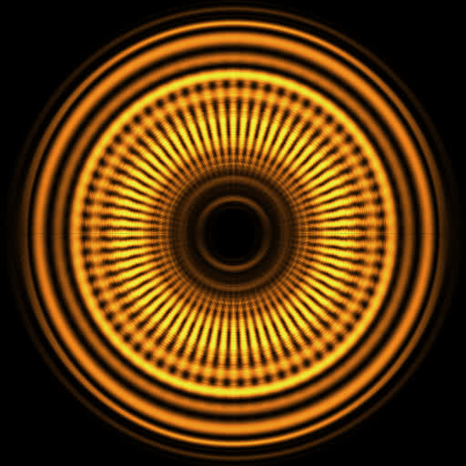
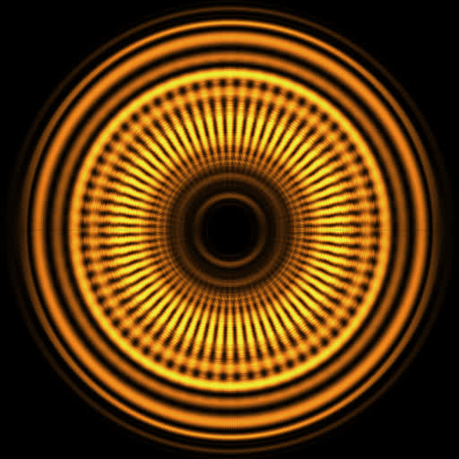


 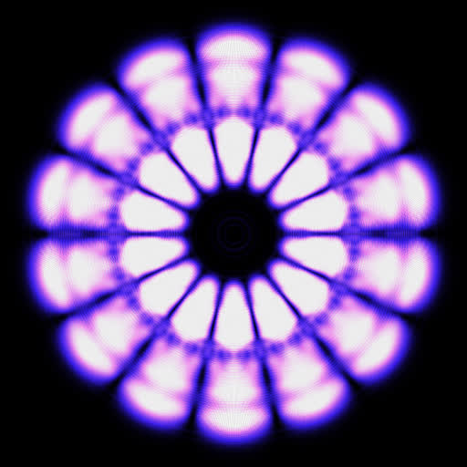
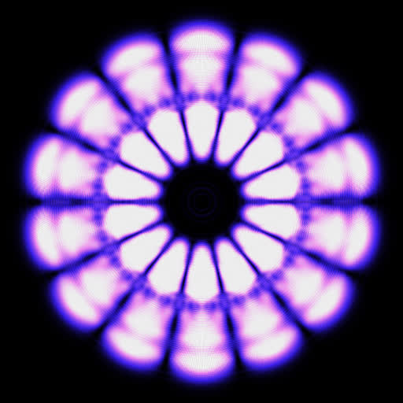


 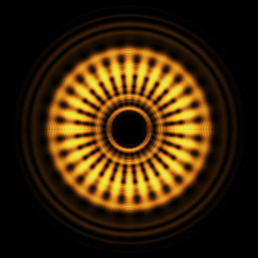
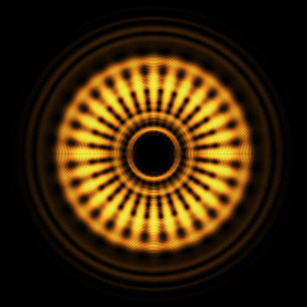

 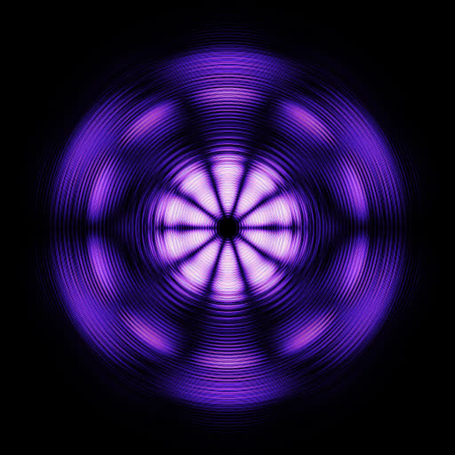
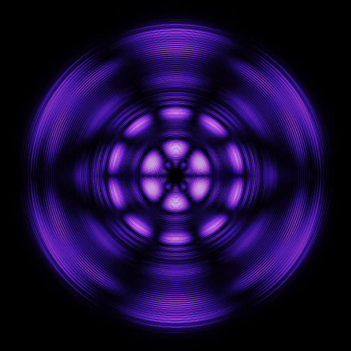
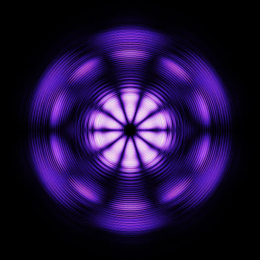
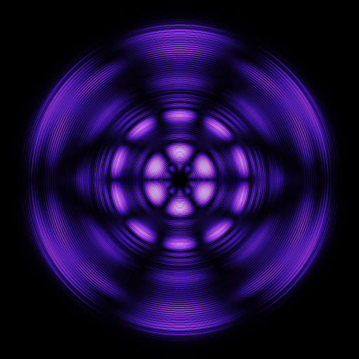


 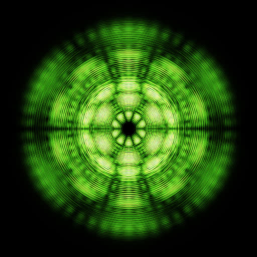
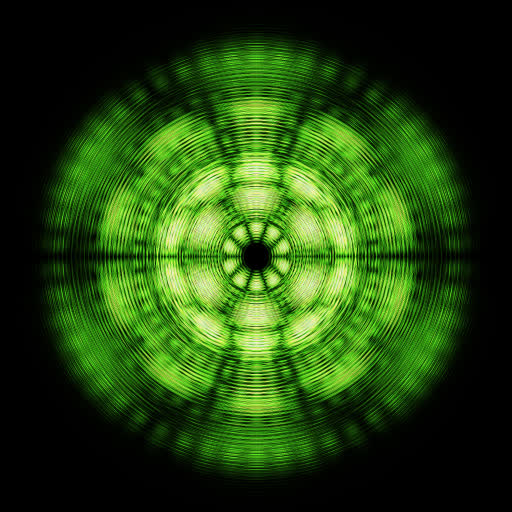